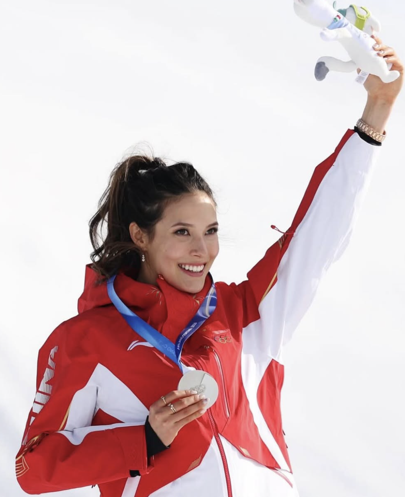
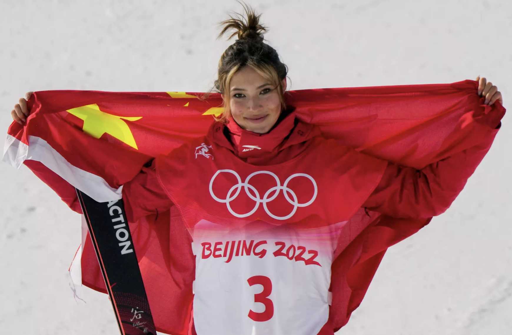
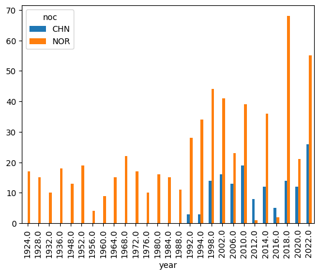
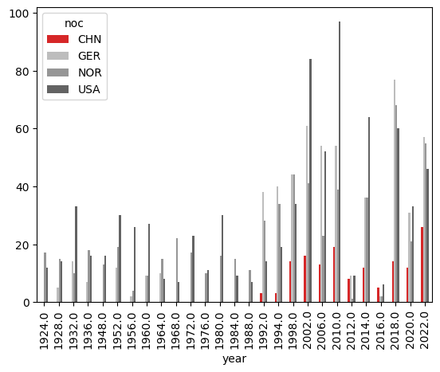
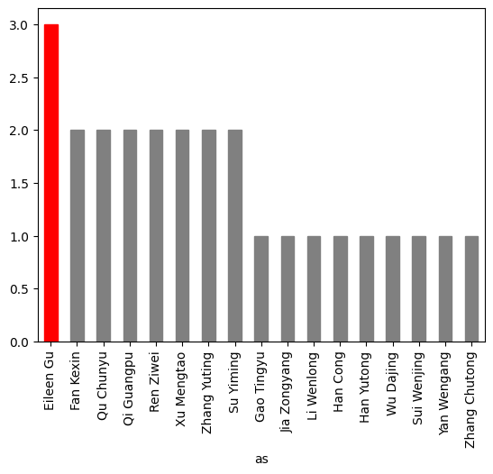

bios[bios['name'] == 'Eileen Gu']| athlete_id | name | born_date | born_city | born_region | born_country | NOC | height_cm | weight_kg | died_date | |
|---|---|---|---|---|---|---|---|---|---|---|
| 135995 | 139214 | Eileen Gu | 2003-09-03 | San Francisco | California | USA | People's Republic of China | NaN | NaN | NaN |

Since the start of the Winter Olympics this year, the name Eileen Gu has appeared everywhere. Olympic athlete, Stanford student, model.. what can’t she do? I found myself wondering what exactly fuels the fascination around her. Is it because she’s so decorated? Because she seems to do everything? Or because she was born and raised in the U.S. but competes for China?
I was curious not just as a viewer, but because Eileen and I actually crossed paths a few years ago. She grew up in the San Francisco Bay Area, went to high school about ten minutes from me, and skied on the same ski team as me about 10 years ago (clearly, our ski careers went in very different directions). Also, both of us have Chinese immigrant mothers and American fathers. When I met her at a party in high school, she was very down-to-earth and easy to connect to.
This week, I wanted to look past the myth and examine the athlete.
Eileen Gu was born and raised in the United States (San Francisco), yet competes for China. You can see that directly in the athlete data:
| athlete_id | name | born_date | born_city | born_region | born_country | NOC | height_cm | weight_kg | died_date | |
|---|---|---|---|---|---|---|---|---|---|---|
| 135995 | 139214 | Eileen Gu | 2003-09-03 | San Francisco | California | USA | People's Republic of China | NaN | NaN | NaN |
This shows:
Born: San Francisco, California, USA
NOC: People’s Republic of China
That duality- American upbringing, Chinese representation- is at the center of the fascination around her.
Just yesterday, Vice President JD Vance commented on Gu’s decision to compete for China, saying that someone who “grew up in the United States of America” and benefited from its freedoms should want to compete for the U.S.
Former NBA player Enes Kanter Freedom weighed in as well, arguing that because she was born and raised in America, competing for China amounts to turning against her own country. Others label her opportunistic, or even a “traitor.”
It’s hard not to see how much more politically charged this conversation has become. In 2022, most of the controversy centered on her personal choice to ski for China instead of the U.S. In 2026, the backlash feels broader, tied to debates about athlete neutrality, freedom of expression, nationalism, and increasingly polarized political lines.
Online discourse now folds in race, identity, and fairness in ways that were less prominent four years ago.

On why she competes for China, Gu has said: “In the U.S., growing up, I had so many amazing idols to look up to. But in China, I feel like there are a lot fewer of those. I’d have a much greater impact in China than in the U.S., and that’s ultimately why I made that decision.” She frames it as a decision about heritage, influence, and opportunity- not rejection.
My view is that the politics surrounding her decision have begun to overshadow her accomplishments. So I wanted to look at the data.
First, some context: China has not historically been a dominant force in the Winter Olympics. In total, China has won 145 Winter Olympic medals, compared to 787 for the U.S. and 603 for Norway, the most successful winter nation.
145Gold medals are even scarcer. China has earned only 38 gold medals in Winter Olympic history, its first coming in 2002. Norway won its first gold in 1924 and has accumulated 225 gold medals to date.
| year | type | discipline | event | as | athlete_id | noc | team | place | tied | medal | |
|---|---|---|---|---|---|---|---|---|---|---|---|
| 34240 | 2002.0 | Winter | Short Track Speed Skating (Skating) | 1,000 metres, Women (Olympic) | Yang Yang (A) | 100218 | CHN | NaN | 1.0 | False | Gold |
| 34239 | 2002.0 | Winter | Short Track Speed Skating (Skating) | 500 metres, Women (Olympic) | Yang Yang (A) | 100218 | CHN | NaN | 1.0 | False | Gold |
| 41277 | 2006.0 | Winter | Short Track Speed Skating (Skating) | 500 metres, Women (Olympic) | Wang Meng | 109921 | CHN | NaN | 1.0 | False | Gold |
| 38189 | 2006.0 | Winter | Freestyle Skiing (Skiing) | Aerials, Men (Olympic) | Han Xiaopeng | 101601 | CHN | NaN | 1.0 | False | Gold |
| 34172 | 2010.0 | Winter | Figure Skating (Skating) | Pairs, Mixed (Olympic) | Shen Xue | 100188 | CHN | Zhao Hongbo | 1.0 | False | Gold |
| year | type | discipline | event | as | athlete_id | noc | team | place | tied | medal | |
|---|---|---|---|---|---|---|---|---|---|---|---|
| 28262 | 1924.0 | Winter | Ski Jumping (Skiing) | Large Hill, Individual, Men (Olympic) | Jacob Tullin Thams | 98216 | NOR | NaN | 1.0 | False | Gold |
| 15507 | 1924.0 | Winter | Cross Country Skiing (Skiing) | Individual, Men (Olympic) | Thorleif Haug | 86509 | NOR | NaN | 1.0 | False | Gold |
| 15505 | 1924.0 | Winter | Cross Country Skiing (Skiing) | 50 kilometres, Men (Olympic) | Thorleif Haug | 86509 | NOR | NaN | 1.0 | False | Gold |
| 15504 | 1924.0 | Winter | Cross Country Skiing (Skiing) | 18 kilometres, Men (Olympic) | Thorleif Haug | 86509 | NOR | NaN | 1.0 | False | Gold |
| 2576 | 1928.0 | Winter | Figure Skating (Skating) | Singles, Women (Olympic) | Sonja Henie | 81280 | NOR | NaN | 1.0 | False | Gold |
Comparing total medal counts, Norway far surpasses China.

When compared to the three most successful Winter Olympic nations — Norway, the U.S., and Germany — the contrast becomes even more pronounced.
countries_filter = wolympics_df['noc'].isin(['USA','CHN','NOR','GER'])
medal_filter = -wolympics_df['medal'].isna()
countries_df = wolympics_df[countries_filter & medal_filter].groupby(['year','noc'])['medal'].size()
countries_df.unstack().plot(
kind='bar',
color=['#d62728', '#bdbdbd', '#969696', '#636363']
)
Gu has spoken about wanting to have a greater impact competing for China. The data suggests she does.
Most of China’s Winter Olympic success has historically come from short track speed skating, freestyle skiing (Eileen’s sport) has not traditionally been one of China’s dominant sports.
In the 2022 Winter Olympics, Gu won two gold medals (big air and halfpipe) and one silver (slopestyle), more medals than any other Chinese athlete.
as
Eileen Gu 3
Fan Kexin 2
Qu Chunyu 2
Qi Guangpu 2
Ren Ziwei 2
Xu Mengtao 2
Zhang Yuting 2
Su Yiming 2
Gao Tingyu 1
Jia Zongyang 1
Li Wenlong 1
Han Cong 1
Han Yutong 1
Wu Dajing 1
Sui Wenjing 1
Yan Wengang 1
Zhang Chutong 1
Name: medal, dtype: int64
She also stands out for her range. Gu competed in three different individual events- halfpipe, slopestyle, and big air. The only other Chinese athlete to compete in more than one individual event was Su Yiming, who entered two. No other Chinese athlete matched Gu’s three.
as
Eileen Gu 3
Su Yiming 2
Name: event, dtype: int64Zooming out further, her versatility is rare even globally. Among all athletes at the 2022 Winter Olympics, she was one of just nine athletes to compete in three or more individual events.
as
Marte Olsbu Røiseland 4
Miho Takagi 3
Quentin Fillon Maillet 3
Suzanne Schulting 3
Aleksandr Bolshunov 3
Irene Schouten 3
Johannes Thingnes Bø 3
Eileen Gu 3
Therese Johaug 3
Name: event, dtype: int64To put that in perspective:
320 athletes competed in just one individual event
33 competed in two
Only 8 competed in three
In other words, what Gu did wasn’t just impressive within China, it was statistically uncommon across the entire Games.
Gu now has five Olympic medals total, the most ever by a female freestyle skier in Olympic history.
In gold medals, she ranks as the third most decorated Chinese woman in Winter Olympic history, behind Wang Meng (4) and Zhou Yang (3). When combining men and women, she already ranks in the top five all-time for China.
In 2026, she has already added two silver medals (big air and slopestyle), with halfpipe still ahead.
At the end of the day, China has not historically dominated the Winter Olympics, especially in freestyle skiing. In that context, her presence matters more and her impact is amplified. If her goal is influence, to inspire a generation and shape a sport, then competing for China isn’t just symbolic, it’s strategic. She stands out more, carries more weight, and the data reflects that.
The political noise around her decision is loud, and it shouldn’t eclipse what she has actually done. Five Olympic medals, three disciplines, historic rankings, and a level of versatility that only a handful of athletes worldwide can claim. People can debate nationalism and identity, but they cannot debate performance. Her accomplishments stand on their own, and they deserve to be recognized as such.